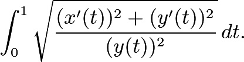

Loggerhead sea turtle eggs are extremely vulnerable to disease. Max Mudpuppy has his hands on a bioweapon capable of flooding the Atlantic ocean with bacteria that would decimate the Loggerhead sea turtle population! He has loaded his custom built autonomous submarine with the bacteria, and has set it to attack. Fortunately, the clever sea turtle Leah managed to hack into Max's submarine remotely. She can read the source code for the submarine, as well as the remote commands that Max is giving it. Her plans are to intercept the submarine just as it begins to unload the bacteria, so that she can contain the leak. Leah believes she has correctly predicted the route the submarine will take, but has one problem: The submarine is programmed to automatically swerve away if it detects sea turtle interference! Thus, Leah can only engage her plan at the last possible second, when the submarine switches from movement mode to bacteria spraying mode, and its protections turn off as it sprays. Because timing is of the essence, Leah will need your help to correctly predict when the submarine will begin to spray the bacteria!
Max's code represents the floor of the Atlantic ocean as an xy-plane bounded by y > 0, y < 100, x > -100, and x > 100. It seems that Max did not pay much attention in his high school geometry course (in his defense, it is difficult to hear your teacher when you're both underwater), and so never learned that the shortest path between two points is a straight line. So, when instructed to move from point P to point Q, the submarine is not programmed to simply go in the straight line from P to Q. Instead, it is programmed to find a parametric curve (x(t), y(t)) which passes through P at time t=0 and passed through Q at time t=1 and has minimal arclength.
If correctly implemented, this procedure would just cause the submarine to move in a straight line. However, Leah noticed that Max Mudpuppy has a typo in his arclength computation code! So, instead of minimizing arclength, the program actually finds the curve minimizing the quantity

While looking through the submarine's file system, Leah noticed a log written by Max Mudpuppy. In the log, he recorded the following two observations about the submarine's path: When you ask it to drive from a point P to a point Q having a different x-coordinate than P, it moves in the arc of a circle connecting the two points which has a center on the x-axis; and if you ask it to move to a point with the same x-coordinate, it's x-coordinate never changes.
Leah has intercepted a command from Max Mudpuppy, telling the submarine to move from it's current position of (1, 1) to the point (1, e2) and then start spraying bacteria. The submarine has calculated it's estimated time of arrival at that position by dividing the distance that needs to be travelled by its speed. However, recall that the submarine errenously computes distances using the formula
Leah knows the true length of the path the submarine will follow. However, to determine the ETA of the submarine (which she needs to know to intercept it without it noticing her), she'll need to know it's speed. She plans to reverse engineer the submarine's speed by calculating the distance D the submarine thinks it travels between (1, 1) and (1, e2).
Help Leah by computing D.
Answer: